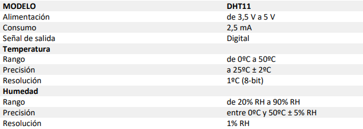

🔍 Introducción
En la era digital actual, el Internet de las Cosas (IoT) está transformando la forma en que interactuamos con los objetos cotidianos, llevando la conectividad y la inteligencia a nuevos niveles. Uno de los dispositivos que se está beneficiando de esta revolución es la nevera, un elemento fundamental en nuestros hogares. Las neveras IoT están redefiniendo la experiencia de la cocina al ofrecer una amplia gama de funciones innovadoras que van más allá de simplemente mantener los alimentos frescos. Al integrar la conectividad a internet, sensores avanzados y capacidades de procesamiento, estas neveras ofrecen una serie de ventajas que mejoran la comodidad, la eficiencia y la seguridad en el hogar. En esta introducción, exploraremos las características, beneficios y desafíos de las neveras IoT, así como su impacto en la vida diaria de los usuarios.
En términos de precios, las neveras IoT generalmente tienden a ser más costosas que las neveras tradicionales debido a la integración de tecnología avanzada y conectividad. Las características adicionales como la capacidad de control remoto a través de una aplicación móvil, la capacidad de hacer listas de compras automáticamente, la alerta de alimentos vencidos, la integración con asistentes virtuales, entre otras, contribuyen al aumento del costo.
Las neveras tradicionales, que carecen de estas características tecnológicas avanzadas, suelen ser más asequibles en comparación. Sin embargo, es importante tener en cuenta que la diferencia de precio puede variar dependiendo de la marca, el tamaño, la capacidad de almacenamiento y otras características específicas de cada modelo.
A pesar de su precio inicial más alto, las neveras IoT pueden ofrecer ahorros a largo plazo en términos de eficiencia energética y gestión inteligente de alimentos, lo que puede compensar parcialmente la inversión inicial. Además, para muchos consumidores, los beneficios adicionales de conveniencia y funcionalidad pueden justificar el costo adicional. En última instancia, la elección entre una nevera IoT y una tradicional dependerá de las necesidades individuales del consumidor y su disposición a invertir en tecnología avanzada para el hogar.
Según la Organización de Consumidores y Usuarios (1r): “El precio de estos modelos suele ser superior al de los modelos tradicionales y la conexión wifi también puede incrementar ligeramente el consumo en stand-by del electrodoméstico. Funciones como el autodiagnóstico o el filtro de olores, que no están asociadas necesariamente al wifi, pueden ser más interesantes que la conexión en sí. Por tanto, habrá que evaluar todas las características que ofrecen estos modelos y si realmente les vas a sacar provecho.
Pero si eres un fanático de la tecnología, el futuro está aquí. Tener un hogar conectado te permite llevar una vida más cómoda, además de ahorrar energía y tiempo. Durante el periodo de vacaciones, podrás controlar tu casa cuando estés fuera. Puede ser una buena inversión si sabes manejar las aplicaciones móviles con soltura, para poder aprovechar al máximo sus recursos.”
⚙️ Implementación
Mi idea consiste en desarrollar un sistema que permita convertir cualquier nevera convencional en una nevera inteligente y conectada. La génesis de esta idea surgió luego de una conversación con la jefa de planta de un hospital. Durante nuestra charla, ella nos informó sobre un problema que enfrentan con el almacenamiento de muestras de sangre y medicamentos especiales que requieren mantenerse a temperaturas bajas. En el hospital, carecen de neveras inteligentes que puedan notificar si la temperatura ha variado fuera de los rangos específicos necesarios para conservar la integridad de las muestras. Esto representa un desafío significativo, ya que es crucial mantener las muestras dentro de un rango de temperatura específico para obtener resultados precisos. La jefa de planta nos mencionó que actualmente solo disponen de una nevera inteligente, ya que el costo de adquirir más es prohibitivo y actualmente no cuentan con la capacidad financiera para hacerlo.
Hemos logrado avanzar en el proyecto al programar la placa ESP32 para que funcione con una aplicación móvil y se conecte a un sensor de temperatura y humedad (DHT11). Según lo que encontramos en programarfacil (2n), este sensor tiene las siguientes características:
Entendemos que el sensor actual no es ideal para temperaturas bajas de neveras, pero por ahora es lo que tenemos. En el futuro, planeamos cambiar al sensor LM75, que tiene un rango de temperaturas más amplio, desde -25 ºC hasta 100 ºC.
🌡️ Características del LM75 según DigiKey
- Altamente personalizable
- Incluye reemplazo pin por pin para la serie LM75, pero permite hasta 27 dispositivos en el bus (tres pines de dirección en el paquete de 8 pines) o tres dispositivos en el bus (un pin de dirección en el paquete de 6 pines).
- Paquete pequeño
- Tipos de paquetes pequeños de 8 pines: SO8, TSSOP8 y HWSON8 de 2 mm x 3 mm. Tipo de paquete de 6 pines: TSOP6 (las variantes P110 y N005 solo están disponibles en el paquete TSOP6).
- Rango de alta temperatura y precisión
- El PCT2075 cuenta con una amplia gama de capacidades de detección de temperatura
- -55 ºC a +125 ºC
- Precisión ±1 ºC máx. de -25 ºC a +100 ºC
- El PCT2075 cuenta con una amplia gama de capacidades de detección de temperatura
Blynk es una plataforma que facilita la creación de aplicaciones para el Internet de las cosas (IoT, por sus siglas en inglés). Permite a los usuarios controlar dispositivos electrónicos remotamente a través de una aplicación móvil. Aquí hay una explicación básica del programa Blynk: Aplicación Blynk: Los usuarios crean su propia aplicación utilizando la plataforma Blynk. Esta aplicación se puede personalizar según las necesidades del proyecto.
☁ Características de Blynk
- Widgets:
Blynk proporciona una variedad de widgets que los usuarios pueden arrastrar y soltar en su aplicación. Estos widgets incluyen botones, deslizadores, gráficos, LED virtuales, entre otros. Cada widget tiene una función específica para controlar o monitorear dispositivos.
- Plataformas compatibles:
Blynk es compatible con una amplia gama de hardware, como placas de desarrollo Arduino, Raspberry Pi, NodeMCU, entre otras. Esto permite a los usuarios conectar fácilmente sus dispositivos al ecosistema Blynk.
- Comunicación:
Blynk proporciona una API que permite la comunicación entre la aplicación móvil y los dispositivos conectados. Utiliza protocolos como MQTT, HTTP y WebSockets para la comunicación bidireccional.
- Token de autenticación:
Cada proyecto en Blynk tiene un token de autenticación único que se utiliza para conectar la aplicación con los dispositivos. Este token actúa como una clave de acceso y garantiza la seguridad de la conexión.
- Blynk Cloud:
Blynk ofrece un servicio en la nube que facilita la conexión entre la aplicación móvil y los dispositivos. Esto elimina la necesidad de configurar y mantener un servidor propio.
📊 Resultados
A continuación, proporciono un breve resumen del trabajo realizado hasta la fecha para lograr el resultado obtenido. En primer lugar, se adquirieron los componentes necesarios, que incluyen la placa ESP32, elegida por su módulo WiFi que facilita la conexión a internet, así como el sensor, los cables y una placa protoboard de dimensiones reducidas. Posteriormente, se procedió a programar la interfaz en la aplicación Blynk y se conectó el sensor a dicha interfaz para visualizar la temperatura y humedad. Esto permite que cualquier dispositivo móvil con acceso a internet y la cuenta creada para este sistema pueda visualizar los datos de temperatura y humedad desde cualquier lugar. Este sistema se alimenta mediante una fuente de energía portátil (Powerbank), y según las pruebas realizadas con una fuente de 2K Amperios, puede funcionar durante aproximadamente 5 días.
Con este código y con la opción events and notification que tiene la aplicación Blynk he podido crear un aviso (Warining) que en este caso cuando baja la temperatura de -5 ºC me avisa mediante un aviso en la aplicación y además de un aviso por correo electrónico
void setup() {
Serial.begin(9600);
}
void loop() {
Serial.println("Hola, mundo!");
delay(1000);
}
Este sistema propuesto combina la funcionalidad de monitoreo de temperatura y humedad dentro de las neveras con características adicionales que mejoran la experiencia del usuario y brindan información útil tanto para el usuario como para el fabricante de las neveras.
En primer lugar, el sensor de temperatura dentro de la nevera proporciona datos precisos sobre las condiciones internas, lo que es fundamental para garantizar la seguridad de los alimentos almacenados y mantener la calidad de estos.
La inclusión de una pantalla táctil en la nevera ofrece una interfaz intuitiva para el usuario, permitiendo la visualización de información relevante, como la lista de compras recomendada según las preferencias del usuario. Esto mejora la eficiencia en la gestión de alimentos y facilita la planificación de compras.
El sistema también registra la temperatura y humedad tanto dentro como fuera de la nevera, lo que proporciona una visión completa del entorno de almacenamiento de alimentos y ayuda a mantener condiciones óptimas.
La generación mensual de un archivo con el rendimiento de la nevera permite un análisis detallado de las variaciones de temperatura a lo largo del tiempo y su comparación con las condiciones ambientales. Esto no solo beneficia al usuario al garantizar un mejor control de la temperatura, sino que también puede ser valioso para el fabricante al proporcionar información sobre el rendimiento de sus productos en diferentes situaciones.
Además, la conexión WiFi del sistema permite la transmisión de datos a la nube, lo que brinda la conveniencia de acceder a la información desde cualquier ubicación a través de una aplicación 7 móvil. Esto aumenta la accesibilidad y la capacidad de seguimiento remoto del estado de la nevera.
En resumen, este sistema ofrece una combinación de monitoreo de temperatura, gestión de alimentos, análisis de rendimiento y conectividad remota, lo que lo convierte en una solución integral para el control y gestión eficiente de las condiciones de almacenamiento de alimentos en las neveras.